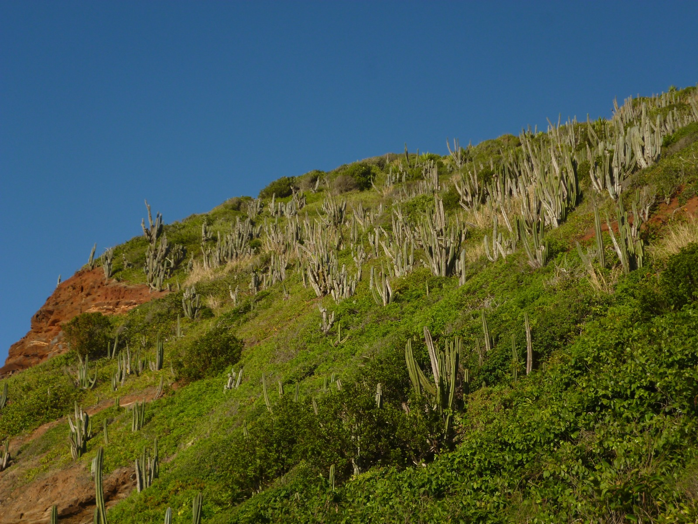
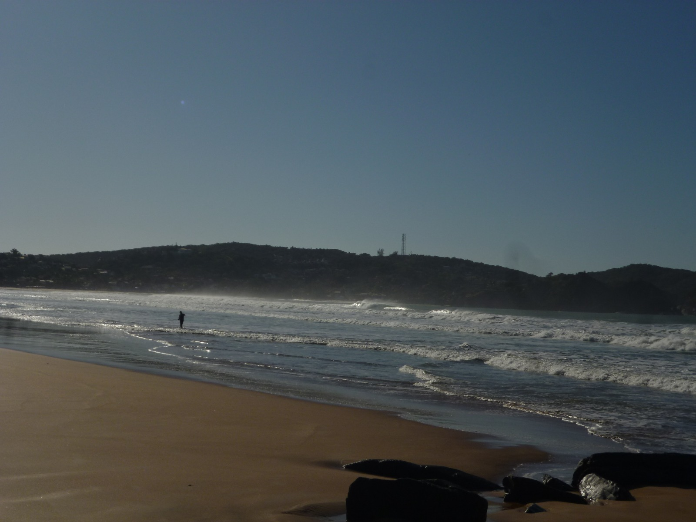
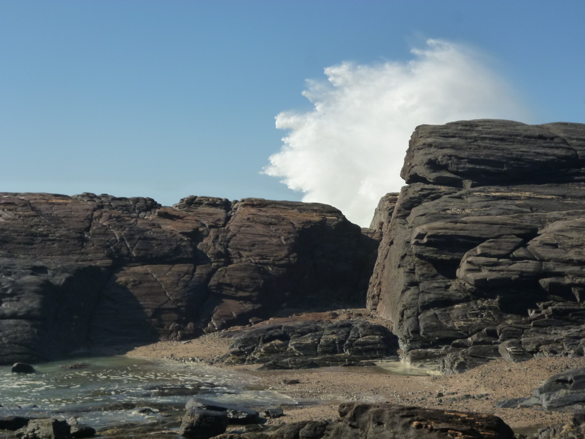
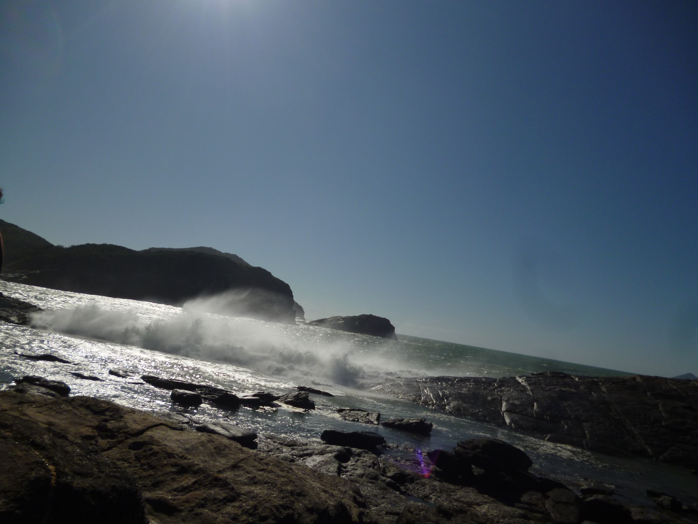

Ponta do marisco - Geriba

Ela está entre as mais populares e visitadas praias de Búzios, devido suas ondas é ideal até mesmo para a prática de esportes como surf.
Em seu canto direito, é possível subir a trilha pela rocha e ter uma visão maravilhosa da praia, este ponto conhecido como ponta do marisco. Já em seu canto esquerdo o mar se torna mais tranquilo ideal para se entrar com crianças.

Seus animais e vegetações são uma característica específica vinda da região dos lagos, como o cacto cabeça de velho, que está presente em torno de suas montanhas.
Sua localização pode ser dada a partir de diversos caminhos, tendo quase 2km de extensão, e com uma grande faixa de areia, ótima para caminhadas, a praia conta com diversas entradas para facilitar seu acesso.
Ponta da lagoinha - Ferradura

Pode ser conhecida como Himalaia Brasileiro, está localizada entre as praias Foca e Ferradura. É um ótimo local para se admirar o pôr ou nascer do sol e impressiona com suas formações rochosas e suas pequenas piscinas naturais que se formam na maré baixa, não é um local muito conhecido, sendo bem calmo e tranquilo.

A Ponta da Lagoinha é constantemente estudada por diversos cientistas, já q abriga interessantes características morfológicas e geológicas.
Este "apelido" veio a partir do fato de que sua formação geológica, datada de 600 milhões de anos, esteve cercada por rochas íngremes em camadas paralelas, um fato geológico que está presente no Himalaia, sendo um indício da formação continental.